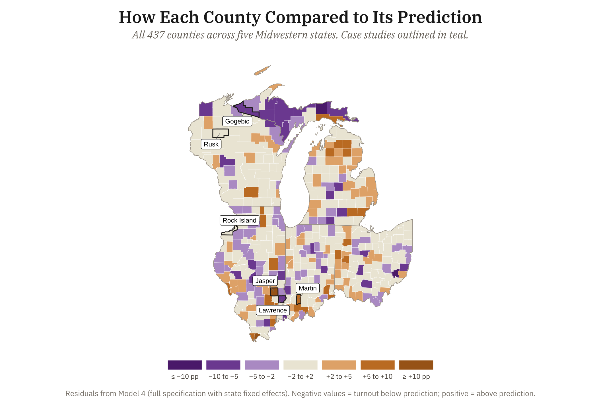
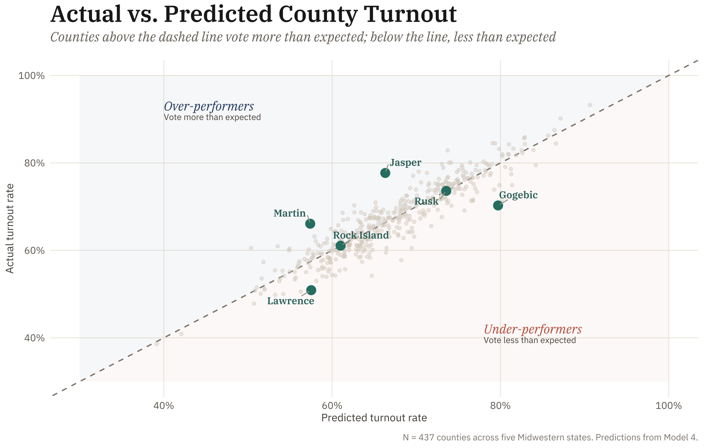

A predictive model of county-level turnout across five Midwestern states in the 2024 presidential election identifies counties that vote significantly above or below their demographic expectations. Six cases anchor a mixed-methods investigation into what the data alone cannot capture.

This project builds on a descriptive needs assessment conducted for the Chicago Lawyers’ Committee for Civil Rights (CLC) Midwest Voting Rights Program as part of their Midwest regional expansion. This analysis included identifying demographic patterns associated with low voter turnout across five Midwestern states, finding consistent gaps by education, race, internet access, and disability status. This project moves from identifying descriptive patterns to building a predictive model that identifies counties performing above or below what their demographic data would suggest, then investigating why through qualitative case analysis.
To do so, this project builds four nested OLS regression models predicting county-level turnout rates in the 2024 general election across Illinois, Indiana, Ohio, Wisconsin, and Michigan. Model 1 uses five structural predictors drawn from the American Community Survey. Model 2 adds racial composition and lower-tail educational attainment, informed by the prior CLC descriptive findings. Model 3 introduces state fixed effects, absorbing state-level institutional context like registration rules, ballot access, and voter ID requirements. Model 4 — the most comprehensive and the one used to identify case studies — adds Hispanic, American Indian / Alaska Native, and age-structure variables. The gap between what Model 4 predicts for a county and its actual turnout — called the residual — identifies counties that perform better or worse than their demographic conditions would suggest.
Counties with the largest positive residuals are ‘over-performers’: something beyond the demographic data captured in the model is driving participation. Counties with the largest negative residuals are ‘under-performers’: something is suppressing turnout that the model cannot explain. Counties closest to zero are the ‘as-expected’ cases.
The scatter below pairs the same Model 4 predictions against actual turnout. Counties on the dashed line voted exactly as their structural conditions predicted; those above voted more, those below voted less. The same six case studies highlighted on the map appear here in teal — over-performers in the upper left, under-performers in the lower right.

Two counties from each tier — over-performers, as-expected, and under-performers — were selected for in-depth qualitative analysis. Selection draws from Model 4 residuals (the comprehensive specification) and pairs one extreme case with one moderate case in each tail, so the analysis holds beyond just the most extreme outliers. The two as-expected counties sit at the median rank with residuals near zero — clean baselines where the model predicts almost exactly right.
ACS 5-Year CVAP Denominators State Election Commissions
Turnout rates are calculated using Citizen Voting Age Population (CVAP) denominators from ACS estimates. Demographic predictors are drawn from the 2024 ACS 5-Year estimates:
| Predictor | ACS Table | Rationale |
|---|---|---|
| % Bachelor’s degree or higher | B15003 | Civic engagement, information access |
| % No high school diploma | B15003 | Lower-tail educational disadvantage |
| % Households with internet access | B28002 | Voter registration, information environment |
| % Limited English proficiency | B16004 | Ballot access barriers |
| % With a disability | B18101 | Participation barriers, registration gaps |
| % Below poverty line | B17001 | Resource constraints on participation |
| % Black or African American | B02001 | Racial composition |
| % Hispanic or Latino | B03003 | Ethnic composition, language and access barriers |
| % American Indian / Alaska Native | B02001 | Tribal community context, jurisdictional differences |
| % Age 18–24 | B01001 | Young adult / college-age share, lower turnout propensity |
| % Age 65+ | B01001 | Older population, higher turnout propensity |
The full Model 4 specification additionally includes state fixed
effects to adjust for state-level institutional context (registration
rules, ballot access, election administration). All ACS data were
retrieved using the tidycensus R package.